图介绍
原文：https://www.studytonight.com/advanced-data-structures/introduction-to-graphs
图是一种高级数据结构，用于组织互联网络中的项目。图中的每一项都称为一个节点(或顶点，这些节点通过边连接。
在下图中，我们有一个简单的图，其中总共有五个节点和六条边。
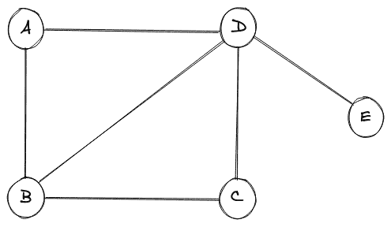
任何图中的节点都可以称为实体，连接不同节点的边定义了这些实体之间的关系。在上图中，我们有一组节点 {V} = {A，B，C，D，E} 和一组边， {E} = {A-B，A-D，B-C，B-D，C-D，D-E} 。
真实世界的例子
图表的一个很好的例子是一个由社会上有联系的人组成的网络，他们通过一个简单的联系联系在一起，这个联系就是他们是否认识对方。
考虑下图，其中显示了一个社交网络的图示，总共有五个人。
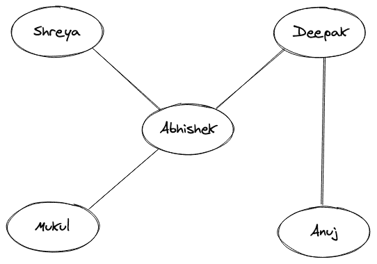
上面两个人之间的一条线表示他们彼此认识。如果名字之间没有界线，那么他们就根本不认识对方。这里的名字相当于一个图的节点，定义“相知”关系的线简单来说相当于一个图的边。还应该注意的是，相互了解的关系是双向的，就像“Abhishek”了解“Mukul”一样，“Mukul”了解“Abhishek”。
上面描述的社交网络只不过是一张图表。
图的类型
让我们涵盖各种不同类型的图表。
1.空图
如果图中没有边，则称该图为空。
空图的图示如下:
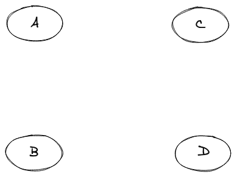
2.无向图
如果我们看一下我们在上面的真实世界例子中的图表示，我们可以清楚地看到不同的节点通过一个链接(即边)连接在一起，而这个边没有任何与之相关的方向。比如“Anuj”和“Deepak”之间的边缘是双向的，因此两者之间的关系是双向的，原来是“Anuj”知道“Deepak”，而“Deepak”也知道“Anuj”。这种类型的图，其中的关系是双向的或没有一个方向，被称为无向图。
另一个无向图的图示如下:
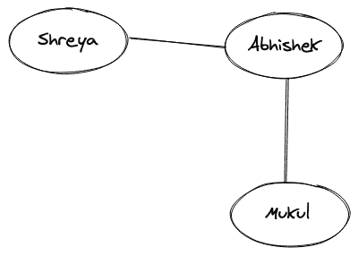
3.有向图
如果两个人的关系是这样的呢，“Shreya”认识“Abhishek”，但是“Abhishek”不认识“Shreya”。这种类型的关系是单向的，它确实包括一个方向。带有箭头的边基本上表示关系的方向，这样的图称为有向图。
该图的图示如下:
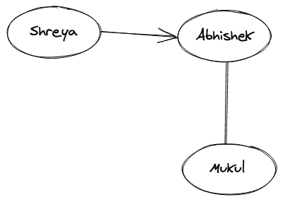
还可以注意到，从“Shreya”到“Abhishek”的边是“Shreya”的输出边和“Abhishek”的输入边。
4.循环图
一个包含至少一个来回遍历的节点的图称为循环图。简单地说，一个图应该至少有一个循环形成，才能被称为循环图。
循环图的图示如下:
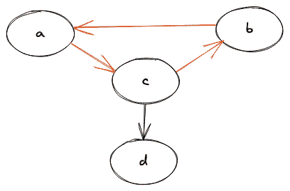
很容易看出，节点(a，b，c)之间存在一个循环，因此它是一个循环图。
5.无圈图
一个我们无法从一个节点开始，又无法遍历回同一个节点，或者根本没有一个循环的图被称为非循环图。
非循环图的图示如下:
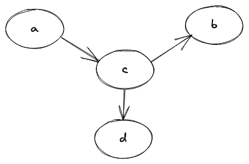
6.加权图
当一个图的边有一些相关的权重时，我们称这个图为加权图。权重通常是一个可以表示任何东西的数字，完全取决于图中节点之间的关系。
加权图的图示如下:
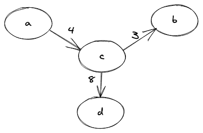
还可以注意到，如果任何图没有任何与之相关的权重，我们简单地称之为未加权图。
7.连通图
在图的每两个节点之间有一条路径的图称为连通图。这里的路径意味着我们能够从一个节点“A”遍历到任意一个节点“B”。简而言之，我们可以说，如果我们从图的一个节点开始，我们将总是能够从该节点遍历到图的所有其他节点，从而获得连通性。
下图给出了连通图的图示:
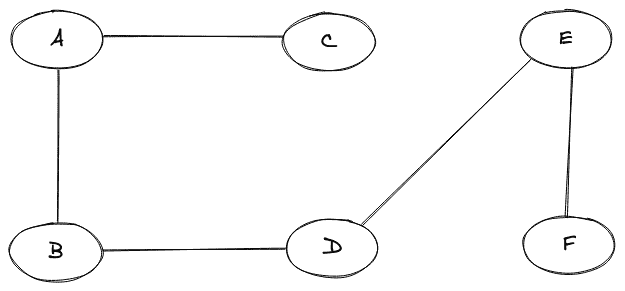
8.不连通图
不连通的图简称为不连通图。在断开的图中，我们将无法从图的每两个节点之间找到路径。
断开图的图示如下:
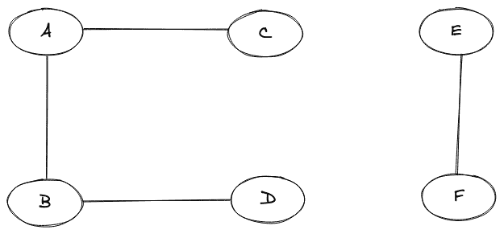
9.完全图
如果一个图的每一对顶点(节点)都有一条边，那么这个图就是一个完整的图。
完整图的图示如下:
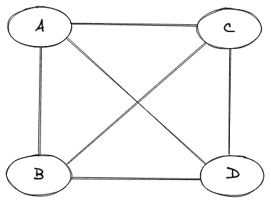
10.多重图
如果图中任意一对节点之间有两条或两条以上的边，则称该图为多重图。
多重图的图示如下:
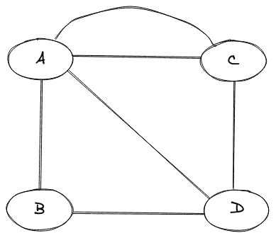
常用图术语
路径 -一系列交替的节点和边，使得每个连续的节点通过边连接。
循环 -起始节点和结束节点相同的路径。
简单路径 -一条我们不会再遇到顶点的路径。
桥 -一条边，它的移除只会使图断开。
森林 -森林是没有周期的图。
树 -没有任何循环的连通图。
度 -图中的度是入射到特定节点上的边的数量。
邻居 -如果顶点“A”和“B”之间存在边，我们称它们为邻居。
结论
- 借助不同人之间的无向图，我们了解了什么是图。
- 我们了解了总共有多少种类型的图。
- 我们了解了在谈论图及其子图时使用的常用术语。